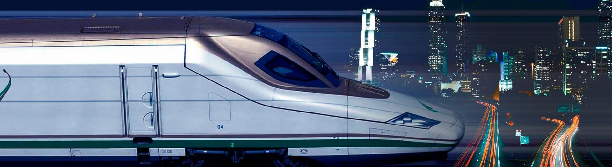

Transporte de víveres e insumos
En la cadena de suministro de alimentos y materiales, la eficiencia es esencial para garantizar la disponibilidad y calidad de los productos en el mercado.
Transporte de animales y materiales
El transporte de animales vivos y materiales presenta desafíos únicos que requieren enfoques especializados para garantizar la seguridad y el bienestar y la seguridad durante todo el viaje.